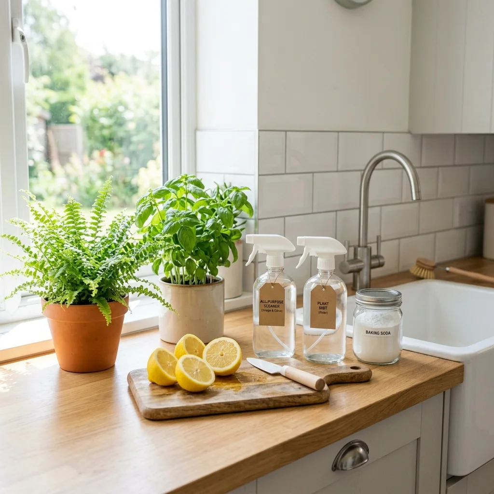

Indoor air quality has become a major health focus, and traditional chemical cleaning solvents often do more harm than good. Harsh chemicals like ammonia, chlorine bleach, and synthetic fragrances leave residual toxins in the air and on surfaces, posing health risks to young children, pets, and individuals with respiratory issues.
At Chicago Residential Cleaning, we've pioneered residential eco cleaning systems across hundreds of Chicago residences. By swapping out toxic formulas for natural, biodegradable alternatives, you can maintain an immaculate home environment without exposing your loved ones to toxic fumes. Here are the top five green cleaning practices our professional teams use and recommend for every household.
1. Harness the Power of Natural Acids (Vinegar & Lemon)
Distilled white vinegar and fresh lemon juice are highly effective natural sanitizers. The acetic acid in vinegar cuts through grease, dissolves mineral scale, and inhibits bacteria growth. Lemons contain citric acid, which naturally whitens surfaces, sanitizes, and leaves a clean citrus scent.
- Window & Glass Cleaner: Mix equal parts distilled white vinegar and warm water in a spray bottle. Use a microfiber cloth for a streak-free shine.
- Limescale & Faucet Shine: Rub half a lemon over metal faucets, let sit for 10 minutes, and rinse with warm water to dissolve hard water build-ups.
2. Sanitize Safely with Baking Soda Scrubbing
Baking soda (sodium bicarbonate) is a mild alkali and a natural deodorizer. Because it is slightly abrasive, it functions as a highly effective, scratch-free scrubbing agent for grease, baked-on food particles, and bathroom soap scum.
"Baking soda is a safe, chemical-free scrubbing agent. Combined with a drop of castile soap, it provides the scrubbing power needed to clean bathtubs, kitchen sinks, and ovens without scratching or emitting VOCs."
3. Use Certified Eco-Label Products (EPA Safer Choice)
When purchasing commercial cleaning products, look for third-party eco-labels to verify their health and safety credentials. Look for the **EPA Safer Choice**, **Green Seal**, or **EcoLogo** badges on packaging. These independent agencies certify that the products are free of known carcinogens, parabens, phthalates, and high-VOC compounds, making them safer for children and pets.
4. Improve Indoor Air Quality with HEPA Vacuums
Many traditional vacuums release fine dust, dander, and pollen back into the air through their exhaust vents. True green cleaning prioritizes air quality. Ensure your vacuum utilizes a sealed **HEPA (High-Efficiency Particulate Air)** filter. HEPA filtration traps 99.97% of microscopic particles down to 0.3 microns, preventing allergens from recirculating into your breathing zones.
5. Microfiber Cloths Over Disposable Wipes
Disposable wipes create landfill waste and contain synthetic chemicals. Swap them for premium microfiber cloths. The split fibers of microfiber create a positive charge that attracts and grabs dirt, dust, and grease instead of moving it around. Microfiber is so effective it can remove up to 99% of bacteria from smooth surfaces using water alone, and it is reusable for hundreds of washes.
The Chicago Green Cleaning Standard
Making the switch to eco cleaning company chicago practices takes a little adjustments, but the long-term health benefits for your family and pets are significant. If you don't have the time to clean yourself, our team at Chicago Residential Cleaning offers premium green cleaning services chicago options upon request. We supply all eco-friendly chemicals and tools to make your home sparkling clean and completely healthy.